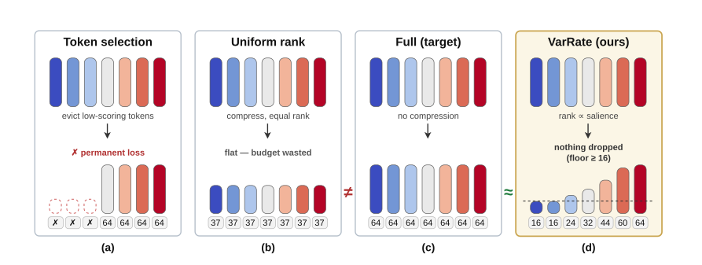

Why it matters왜 중요한가
The KV cache, not the weights, is what actually sets the memory ceiling at long context — and the standard way to shrink it quietly assumes you know the question in advance.
긴 문맥에서 메모리 상한을 실제로 정하는 것은 가중치가 아니라 KV 캐시다. 그리고 그것을 줄이는 표준적 방법은, 질문을 미리 안다고 조용히 가정한다.
Token-selection compressors (SnapKV, Ada-KV, PyramidKV, H2O) score each token by the attention it draws from a recent observation window — which is to say, from the current query — and evict the losers. That works beautifully when the query is sitting right there in the context. It stops working the moment you do the thing production systems actually do: compress a long document once and serve many different questions off the same cache. The importance signal was fitted to a question that is no longer being asked, and because eviction is irreversible, there is no recovering from a bad call. This paper's framing is that both dominant training-free families are making the same mistake in opposite directions — one is rigidly discrete (keep or delete), the other rigidly uniform (same rank for everyone) — and that the fix is to make rank a continuous, allocatable resource.
토큰 선택 계열(SnapKV, Ada-KV, PyramidKV, H2O)은 각 토큰이 최근 관찰 윈도우 — 즉 현재 질의 — 로부터 받는 어텐션으로 점수를 매기고 낮은 것을 퇴출시킨다. 질의가 문맥 안에 함께 있을 때는 훌륭하게 작동한다. 그러나 실제 프로덕션이 하는 일, 즉 긴 문서를 한 번 압축해 여러 다른 질문에 같은 캐시로 응답하는 순간 무너진다. 중요도 신호는 더 이상 묻지 않는 질문에 맞춰져 있었고, 퇴출은 되돌릴 수 없으므로 잘못된 판단에서 회복할 길이 없다. 이 논문의 프레이밍은 이렇다. 지배적인 두 학습-없는 계열은 반대 방향으로 같은 실수를 하고 있다. 하나는 경직되게 이산적이고(남기거나 지우거나), 다른 하나는 경직되게 균일하다(모두에게 같은 랭크). 해법은 랭크를 연속적이고 배분 가능한 자원으로 만드는 것이다.

By the numbers핵심 숫자
The headline table핵심 표
| method | mem | AVG-16 (Llama) | AVG-16 (Qwen) | two-model mean |
|---|---|---|---|---|
| Full (ceiling) | 100% | 46.01 | 48.79 | 47.40 |
| KIVI-4 † | 31% | 45.94 | 48.98 | 47.46 |
| VarRate (ours) | 20% | 45.69 | 48.00 | 46.85 |
| SnapKV | 20% | 45.79 | 46.25 | 46.02 |
| PyramidKV | 20% | 46.02 | 44.90 | 45.46 |
| Ada-KV | 20% | 45.33 | 46.49 | 45.91 |
| KIVI-2 | 19% | 44.82 | 46.82 | 45.82 |
| flat (uniform rank) | 20% | 43.47 | 30.50 | 36.99 |
The two ideas두 개의 아이디어
Water-filling over salience
Each coded token gets rank rt = clip(rmin + λ·ŝt, rmin, R), where ŝt is its normalized SnapKV salience and λ is tuned so the ranks sum exactly to the budget. This is a classic water-filling solution, and it is what turns compression from a discrete keep/drop decision into a continuous allocation. The floor rmin guarantees no token ever reaches zero — though the ablation is candid that the floor is slack: 0.0% of coded tokens sit on it, so it is a safety margin against a pathological signal rather than an active mechanism at this operating point.
각 코딩 토큰은 rt = clip(rmin + λ·ŝt, rmin, R)의 랭크를 받는다. ŝt는 정규화된 SnapKV 중요도이고, λ는 랭크 합이 예산과 정확히 일치하도록 조정된다. 전형적인 물 채우기 해법이며, 압축을 '남길까 지울까'라는 이산적 결정에서 연속적 배분으로 바꾸는 장치다. 바닥값 rmin은 어떤 토큰도 0에 닿지 않도록 보장한다 — 다만 어블레이션은 이 바닥이 느슨하다고 솔직히 밝힌다. 코딩 토큰의 0.0%만이 바닥에 걸리므로, 현재 작동점에서는 능동적 장치라기보다 병리적 신호에 대한 안전 마진이다.
Pre-RoPE residuals on a shared basis
Keys are un-rotated back to their pre-RoPE form and stacked with the values of every GQA head into one per-token vector, so a single basis serves the whole layer. A strided set of anchor tokens plus the recent window are stored exactly; everything else is coded as a residual against the mean of its nearest anchors. The basis itself is the top-R right singular vectors from an offline SVD over a handful of unlabeled calibration contexts — no gradients, no fine-tuning, and its storage is model-side rather than charged to the per-sequence budget.
키를 RoPE 이전 형태로 되돌린 뒤 모든 GQA 헤드의 값과 함께 하나의 토큰별 벡터로 쌓는다. 그래서 하나의 기저가 레이어 전체를 감당한다. 일정 간격의 앵커 토큰과 최근 윈도우는 정확히 저장하고, 나머지는 가장 가까운 앵커들의 평균에 대한 잔차로 코딩한다. 기저 자체는 소량의 레이블 없는 캘리브레이션 문맥에 대해 오프라인 SVD로 얻은 상위 R개 우특이벡터다. 그래디언트도 파인튜닝도 없으며, 저장 비용은 시퀀스별 예산이 아니라 모델 쪽에 귀속된다.
How it works어떻게 작동하나
- Build the basis, once and offline. 기저를 한 번, 오프라인으로 만든다. Run a handful of unlabeled contexts through the model, collect per-layer residuals, take the top-R right singular vectors by SVD. The paper shows the spread across three independently built bases is ≤ 1.8 points — the method is not sensitive to which calibration texts you happened to pick.레이블 없는 문맥 몇 개를 모델에 통과시켜 레이어별 잔차를 모으고, SVD로 상위 R개 우특이벡터를 취한다. 독립적으로 만든 세 기저 간 편차가 1.8점 이하임을 보인다. 어떤 캘리브레이션 텍스트를 골랐는지에 민감하지 않다는 뜻이다.
- Split the sequence into exact and coded. 시퀀스를 정확 집합과 코딩 집합으로 나눈다. Strided anchors and the recent window go into the cache at full fidelity. Every other token is expressed as a residual against the mean of its c nearest anchors in Euclidean distance.일정 간격 앵커와 최근 윈도우는 full fidelity로 캐시에 들어간다. 나머지 토큰은 유클리드 거리 기준 가장 가까운 앵커 c개의 평균에 대한 잔차로 표현된다.
- Score salience, then water-fill. 중요도를 점수화한 뒤 물을 채운다. Take SnapKV's observation-window attention as the raw score, smooth it with a length-5 moving average, min-max normalize, then solve for the λ that makes the allocated ranks sum to the remaining budget.SnapKV의 관찰 윈도우 어텐션을 원점수로 삼아 길이 5 이동평균으로 평활화하고 min-max 정규화한 뒤, 배분된 랭크 합이 잔여 예산과 같아지는 λ를 푼다.
- Project once at full rank, then mask. 풀랭크로 한 번 사영하고, 마스킹한다. The projection V·et is computed at rank R for every token and simply truncated to the leading rt coefficients — which is why variable rate costs almost nothing in arithmetic over a fixed-rank codec. The coefficients are themselves quantizable: 3-bit is within noise of fp16 at less than half the memory.사영 V·et는 모든 토큰에 대해 랭크 R로 계산한 뒤 선행 rt개 계수만 남기고 자른다. 가변 레이트가 고정 랭크 코덱 대비 연산상 거의 공짜인 이유다. 계수 자체도 양자화 가능하다. 3비트에서 메모리는 절반 이하이면서 정확도는 fp16과 노이즈 범위 내다.
- Reconstruct a full-length cache at decode. 디코드 시 원래 길이의 캐시를 복원한다. Add the reconstructed residual back to the anchor mean, split into key and value, re-apply RoPE to the key. Decode runs at 37.4 tok/s against the uncompressed 37.5 — unchanged, because the attention still sees every position.복원된 잔차를 앵커 평균에 더하고 키와 값으로 나눈 뒤 키에 RoPE를 다시 적용한다. 디코드는 무압축 37.5 tok/s 대비 37.4 tok/s로 사실상 동일하다. 어텐션이 여전히 모든 위치를 보기 때문이다.
What to take away그래서, 가져갈 것
The real contribution is a failure mode, not a benchmark number. At matched memory and a query-aware setting, VarRate merely ties the selection family. Its argument only pays off when the importance signal is stale — which is exactly the prefix-caching and multi-turn regime that production serving lives in.
진짜 기여는 벤치마크 숫자가 아니라 실패 양상이다. 동일 메모리·질의 인지 설정에서 VarRate는 토큰 선택 계열과 그저 비긴다. 이 논문의 논지는 중요도 신호가 낡았을 때 비로소 값을 한다 — 그리고 그것이 바로 프로덕션 서빙이 살아가는 프리픽스 캐싱·멀티턴 영역이다.
The flat ablation is the most informative row in the paper: uniform rank collapses to 30.50 on Qwen while VarRate reaches 48.00. Qwen has fewer KV heads, so it is far less forgiving of spending rank uniformly. Low-rank KV coding fails or succeeds on the allocation policy, not on the basis.
논문에서 가장 많은 것을 말해주는 줄은 flat 어블레이션이다. Qwen에서 균일 랭크는 30.50으로 붕괴하는데 VarRate는 48.00에 이른다. Qwen은 KV 헤드가 적어 랭크를 균일하게 쓰는 것을 훨씬 덜 용서한다. 저랭크 KV 코딩의 성패는 기저가 아니라 배분 정책에서 갈린다.
Compression axes are composable. VarRate sits on the rank axis, quantization on the precision axis, and the paper shows 4-bit coefficients take the footprint from 20.2% to 11.0% for +1.9% more prefill. If you are building a serving stack, these stack rather than compete.
압축 축은 조합 가능하다. VarRate는 랭크 축에, 양자화는 정밀도 축에 있으며, 4비트 계수가 저장량을 20.2%에서 11.0%로 낮추는 대가가 프리필 +1.9%에 불과함을 보인다. 서빙 스택을 짜고 있다면 이들은 경쟁이 아니라 누적된다.